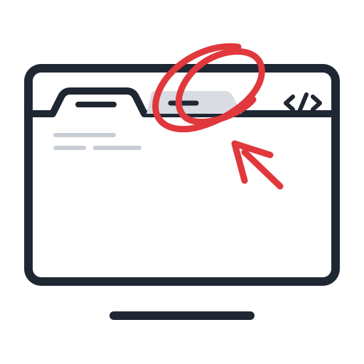

Apple silicon & Intel
Menu-bar app with its own Screen Recording permission. Captures app, window and URL context.
Download for Mac
redlineOpen source / Visual feedback for AI agents
Press a hotkey, draw on anything on your screen, and write what should change. Claude, Codex or any MCP agent gets the picture, the exact spot and the context — then edits the code.
MIT licensed · macOS · Windows · Linux
Works with Claude Code Works with Codex CLI Works with Antigravity Works with any MCP agentOne hotkey freezes the screen under your cursor. Box, arrow, pen or pin — each mark gets its own note.
Annotated screenshot, a zoomed crop per mark and exact coordinates, served over MCP.
The agent reports back per mark. You click Looks good or send it back.
See it work
How it works
Press ⌥⇧M / Alt+Shift+M. Draw on a browser tab, a native app, a design file — anything. Write what should change, then ⌘↵ to save.
Requests are plain files in ~/.redline. Reopen one any time to move marks, edit comments or delete it.
Type /redline in Claude Code (or tell any agent “apply my latest Redline”). It reads the request over MCP, finds the matching code and makes the change.
Each mark comes back as review with a note. Click ✓ to mark it done, or ↺ to reopen it.
Built-in MCP server
Redline speaks the Model Context Protocol, so it plugs into the agent you already use. Four tools, one prompt, zero cloud.
# add once, available in every project
claude mcp add --scope user redline -- \
node /path/to/redline/desktop-app/mcp/server.js// Settings → Developer → Edit Config
{
"mcpServers": {
"redline": {
"command": "node",
"args": ["/path/to/redline/desktop-app/mcp/server.js"]
}
}
}# or add [mcp_servers.redline] to ~/.codex/config.toml
codex mcp add redline -- \
node /path/to/redline/desktop-app/mcp/server.js// Agent panel → MCP Servers → View raw config
{
"mcpServers": {
"redline": {
"command": "node",
"args": ["/path/to/redline/desktop-app/mcp/server.js"]
}
}
}Cursor, Windsurf, VS Code, Cline and Zed use the same command / args entry.
list_edit_requestsLists requests, newest first, filtered by status.get_edit_requestAnnotated preview, a crop per open mark and a structured description.update_edit_request_statusSets status per mark with notes you see in the app.delete_edit_requestDeletes a request — only when you ask.apply_latestPrompt: implement every unfinished mark and report back.Download
Menu-bar app with its own Screen Recording permission. Captures app, window and URL context.
Download for MacLives in the system tray. No extra permission needed for screen capture.
Download for WindowsTray app for X11; on Wayland, capture goes through the desktop portal.
Download for Linuxv0.0.1-beta Pre-release builds, not yet signed: the first launch shows a security prompt. Release notes · All releases ↗
git clone https://github.com/sislamrafi/redline.git
cd redline/desktop-app && npm install
npm run app